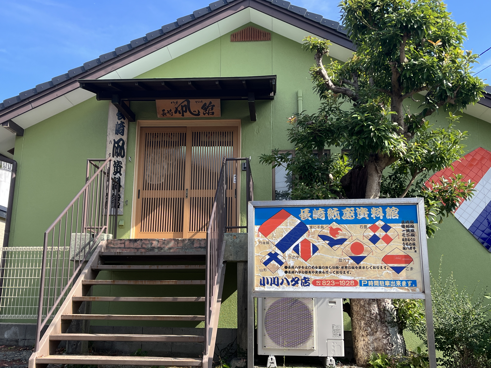

長崎市観光
時間: 12時〜14時
移動開始位置名: 松ヶ枝国際ターミナル
1つ目の場所: 長崎新地中華街

特徴: 日本三大中華街でグルメを堪能し、ショッピングを楽しもう！
日本の三大中華街のひとつで、中華料理店から中国のお菓子や雑貨店など約40軒の店舗が並んでいます。異国情緒にあふれる街並みを見ながら、食べ歩きを楽しむのがおすすめです。
滞在時間:60分
2つ目の場所: 小川ハタ店「長崎ハタ資料館」
特徴: 年中行事として親しまれてきた凧資料館
小川ハタ店「長崎ハタ資料館」では、長崎の伝統的な凧「ハタ」作りの工具や制作過程を見学でき、手作業の美を感じながら歴史的な技術を学べます。
体験学習も提供されており、自分だけのハタを作り、凧揚げの喜びを体験することができます。
滞在時間:20分
到着:松ヶ枝国際ターミナル